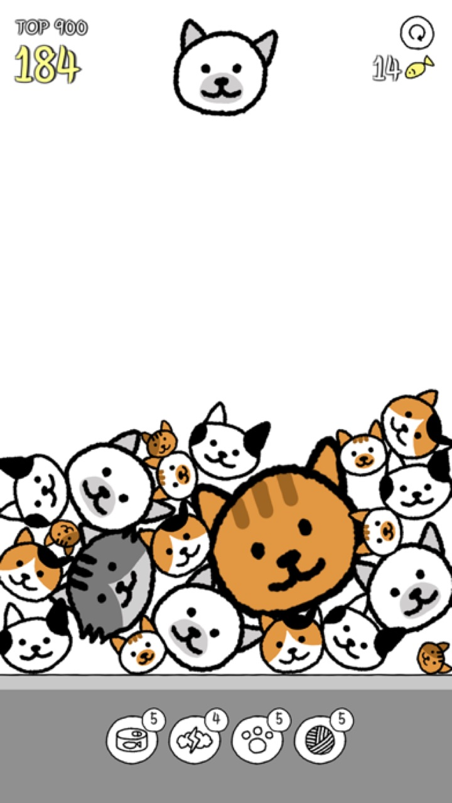
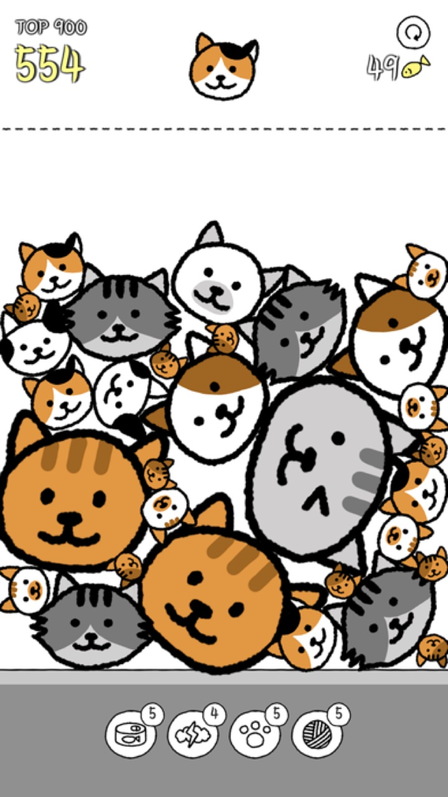

★4.8
앱스토어 평점


같은 고양이를 합치면 더 큰 고양이로 — 팡! 터지는 소리가 스트레스까지 날려줘요


★4.8 · 전 세계 평가 10,000+ · 무료
+=


같은 고양이 둘이 만나면 다음 고양이가 태어나요 — 게임 속 11종을 그대로 데려왔어요.
그리고, 가장 큰 11번 고양이 둘이 드디어 만나면…? 직접 확인해보세요 🎆

규칙은 하나 — 같은 고양이를 붙이면 더 큰 고양이. 그런데 뾰족한 고양이 귀 때문에 데굴데굴 구르는 물리가 마음대로 안 돼서, 자꾸 "한 판 더"를 외치게 되죠. 팡! 터질 때의 소리와 진동은 덤.
느긋한 클래식부터 손이 바빠지는 스피드, 5분 타임어택, 1000점 도전까지. 모드마다 글로벌 랭킹이 따로 있어서 오늘의 기록을 겨뤄요.

안경·모자·리본으로 고양이를 꾸미고, 배경 테마도 취향대로. 광고는 보고 싶을 때만 — 인터넷 없이 오프라인에서도 언제든 한 판.
App Store에 실제로 올라온 이야기들

"아니 진짜 심심할때해도 좋고 고양이들이 넘 귀엽고 고양이들 떨어질 때 나는 소리도 너무 귀엽고 계속하게됨!"

"이게 슬슬 할만하면서 은근하게 어려운게 승부욕 자극하면서 재밌네요"

"시간 때울 때 하기 좋은 고양이 게임! 고양이의 끝은 어딜까 궁금해서 계속 하게 돼요"
「고양이는 정말 귀여워」(★4.9 · 리뷰 71,000+)를 만든 그 스튜디오


iOS & Android 무료